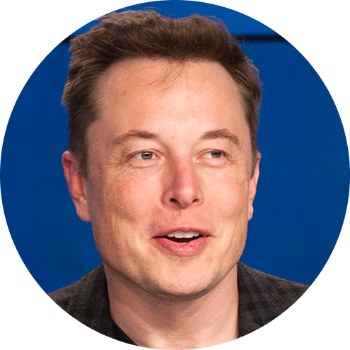

ELON MUSKElon Reeve Musk FRS (/ˈiːlɒn/; born June 28, 1971) is an entrepreneur and business magnate. He is the founder, CEO, and Chief Engineer at SpaceX;early-stage investor, CEO, and Product Architect of Tesla, Inc.; founder of The Boring Company; and co-founder of Neuralink and OpenAI. A centibillionaire, Musk is the richest person in the world as of November 2021 with a net worth of over US$320 billion. Musk was born to a Canadian mother and South African father and raised in Pretoria, South Africa. He briefly attended the University of Pretoria before moving to Canada at age 17 to attend Queen's University. He transferred to the University of Pennsylvania two years later, where he received bachelor's degrees in economics and physics. He moved to California in 1995 to attend Stanford University but decided instead to pursue a business career, co-founding the web software company Zip2 with brother Kimbal. The startup was acquired by Compaq for US$307 million in 1999. The same year, Musk co-founded online bank X.com, which merged with Confinity in 2000 to form PayPal. The company was bought by eBay in 2002 for $1.5 billion. In 2002, Musk founded SpaceX, an aerospace manufacturer and space transport services company, of which he is CEO and CTO. In 2004, he joined electric vehicle manufacturer Tesla Motors, Inc. (now Tesla, Inc.) as chairman and product architect, becoming its CEO in 2008. In 2006, he helped create SolarCity, a solar energy services company that was later acquired by Tesla and became Tesla Energy. In 2015, he co-founded OpenAI, a nonprofit research company that promotes friendly artificial intelligence. In 2016, he co-founded Neuralink, a neurotechnology company focused on developing brain–computer interfaces, and founded The Boring Company, a tunnel construction company. Musk has proposed the Hyperloop, a high-speed vactrain transportation system. |
 |
| year | view |
|---|---|
| 2020 | Politics |
| 2019 | Covid19 |
| 2018 | ArtificialIntelligence |
| Skill's | Rating |
|---|---|
| Fishing | ⭐⭐ |
| Skating | ⭐⭐⭐ |
| Coding | ⭐⭐⭐⭐⭐ |